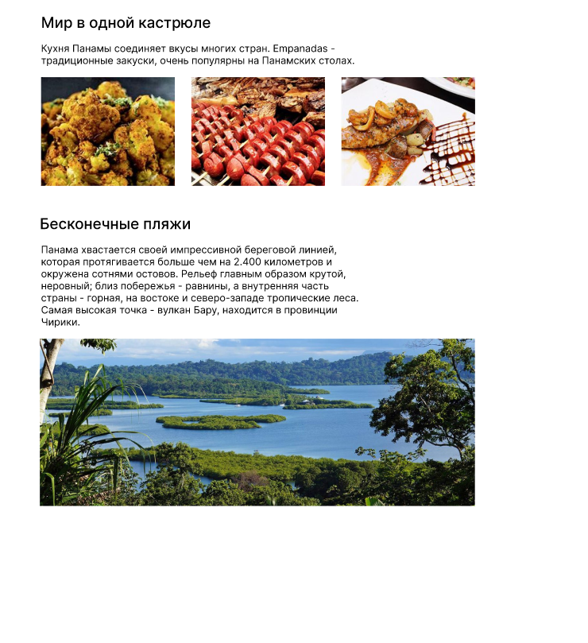
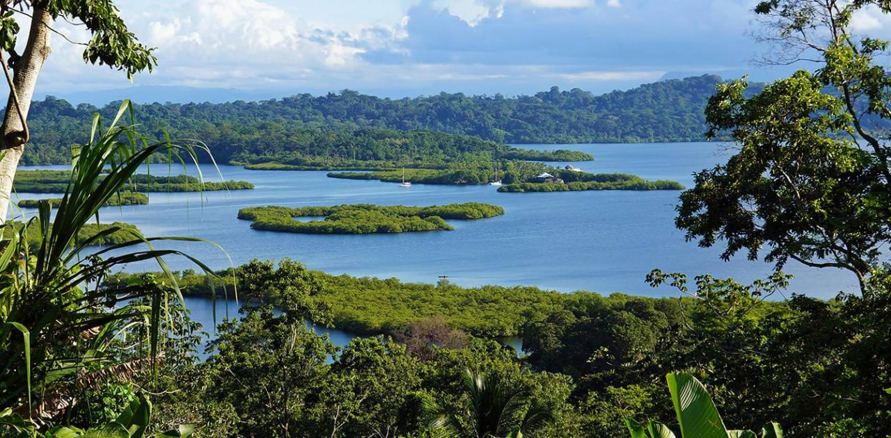
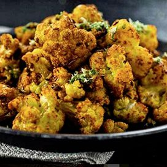
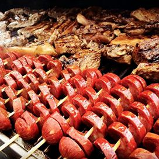
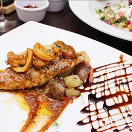

Задания figma
Повторить композицию
Композиция

Сопутствующие задачи:
- Соблюсти одинаковый отступ между каждым элементом: например, 26 пикселей. Чтобы проверять отступы, выдели элемент, зажми клавишу Alt и наведись на соседний элемент.
Картинки:




Тексты:
Кухня Панамы соединяет вкусы многих стран. Empanadas - традиционные закуски, очень популярны на Панамских столах.
Панама хвастается своей импрессивной береговой линией,которая протягивается больше чем на 2.400 километров иокружена сотнями остовов. Рельеф главным образом крутой,неровный; близ побережья - равнины, а внутренняя частьстраны - горная, на востоке и северо-западе тропические леса. Самая высокая точка - вулкан Бару, находится в провинцииЧирики.